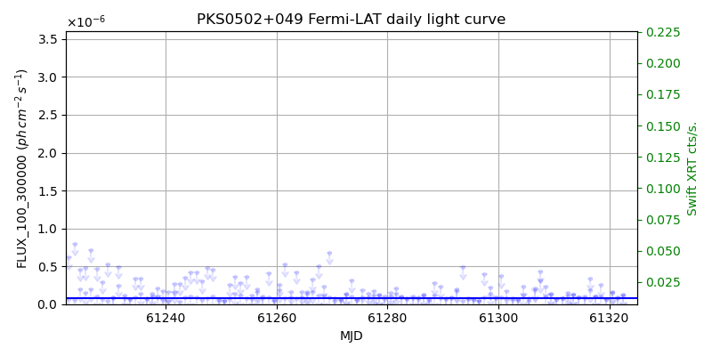
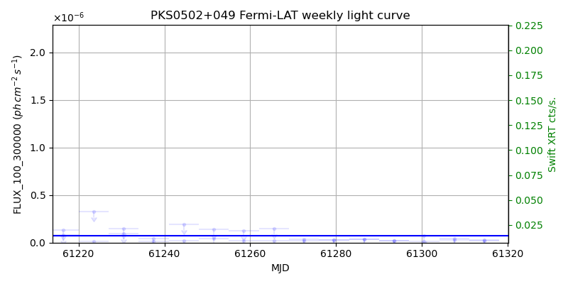
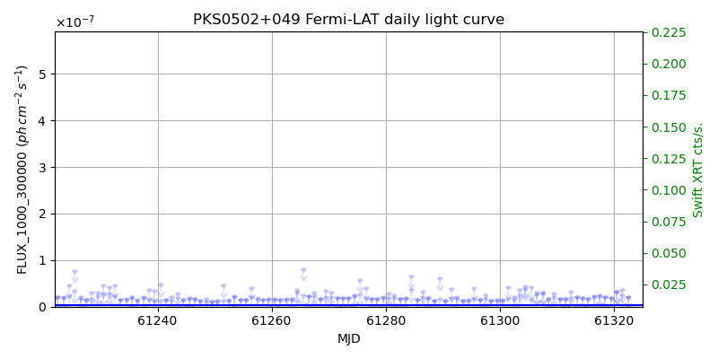
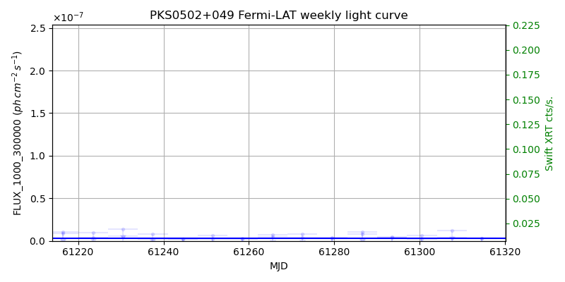

LAT Lightcurve site: https://fermi.gsfc.nasa.gov/ssc/data/access/lat/msl_lc/source/PKS_0502p049
Swift site: https://www.swift.psu.edu/monitoring/source.php?source=PKS0502+049
NED: Query
Time of last update of this page: UT: 2026-10-10 15:15 (MJD: 61323.636)
| Property | Value |
|---|---|
| R.A. | 5:05:23.28 |
| Dec. | 4:59:42.0 |
| z | 0.954 |
| 3FGL SpectrumType | LogParabola |
| 3FGL PL Index | |
| 3FGL Flux_100_300000 | 7.35e-08 1 / (s cm2) |
| 3FGL Flux_1000_300000 | 2.95e-09 1 / (s cm2) |
| 3FGL Flux >200 GeV | 7.78e-14 1 / (s cm2) |
| 3FGL Extrap. Crab >200 GeV | 0.00 |
| 3FGL Flux After EBL Absorption >200GeV | 2.21e-15 1 / (s cm2) |
| 3FGL EBL Crab Fraction >200GeV | 0.00 |

| MJD | dMJD | Flux | dFlux | Frac3FGL | FracCrab>200GeV | EBLFracCrab>200GeV |
|---|---|---|---|---|---|---|
| 61320.50 | 0.50 | 1.44e-07 | 0.00e+00 | 0.00 | 0.00 | 0.00 |
| 61321.50 | 0.50 | 8.11e-08 | 0.00e+00 | 0.00 | 0.00 | 0.00 |
| 61321.50 | 0.50 | 8.97e-08 | 0.00e+00 | 0.00 | 0.00 | 0.00 |
| 61322.50 | 0.50 | 1.13e-07 | 0.00e+00 | 0.00 | 0.00 | 0.00 |
| 61322.50 | 0.50 | 1.24e-07 | 0.00e+00 | 0.00 | 0.00 | 0.00 |

| MJD | dMJD | Flux | dFlux | Frac3FGL | FracCrab>200GeV | EBLFracCrab>200GeV |
|---|---|---|---|---|---|---|
| 61300.50 | 3.50 | 7.03e-08 | 0.00e+00 | 0.00 | 0.00 | 0.00 |
| 61307.50 | 3.50 | 2.43e-08 | 0.00e+00 | 0.00 | 0.00 | 0.00 |
| 61307.50 | 3.50 | 4.61e-08 | 0.00e+00 | 0.00 | 0.00 | 0.00 |
| 61314.50 | 3.50 | 2.54e-08 | 0.00e+00 | 0.00 | 0.00 | 0.00 |
| 61314.50 | 3.50 | 2.02e-08 | 0.00e+00 | 0.00 | 0.00 | 0.00 |

| MJD | dMJD | Flux | dFlux | Frac3FGL | FracCrab>200GeV | EBLFracCrab>200GeV |
|---|---|---|---|---|---|---|
| 61320.50 | 0.50 | 3.14e-08 | 0.00e+00 | 0.00 | 0.00 | 0.00 |
| 61321.50 | 0.50 | 2.41e-08 | 0.00e+00 | 0.00 | 0.00 | 0.00 |
| 61321.50 | 0.50 | 3.53e-08 | 0.00e+00 | 0.00 | 0.00 | 0.00 |
| 61322.50 | 0.50 | 2.16e-08 | 0.00e+00 | 0.00 | 0.00 | 0.00 |
| 61322.50 | 0.50 | 2.11e-08 | 0.00e+00 | 0.00 | 0.00 | 0.00 |

| MJD | dMJD | Flux | dFlux | Frac3FGL | FracCrab>200GeV | EBLFracCrab>200GeV |
|---|---|---|---|---|---|---|
| 61300.50 | 3.50 | 6.04e-09 | 0.00e+00 | 0.00 | 0.00 | 0.00 |
| 61307.50 | 3.50 | 4.26e-09 | 0.00e+00 | 0.00 | 0.00 | 0.00 |
| 61307.50 | 3.50 | 1.18e-08 | 0.00e+00 | 0.00 | 0.00 | 0.00 |
| 61314.50 | 3.50 | 3.07e-09 | 0.00e+00 | 0.00 | 0.00 | 0.00 |
| 61314.50 | 3.50 | 2.75e-09 | 0.00e+00 | 0.00 | 0.00 | 0.00 |
--------------------------------------------------------- Using user-supplied coords: 5:05:23.28 4:59:42.0 2000 --------------------------------------------------------- FLWO UT night of: 2026-10-11 Local Sid. @ Midnight: 00:55 Sunset (-15.0) (local, UT): 19:04 02:04 Sunrise (-15.0) (local, UT): 05:18 12:18 Moonrise (local, UT): Moonset (local, UT): Moon phase: 0.01 --------------------------------------------------------- AzTime LSID UT Obj_el Obj_az Mn_el Mn_az Sep. --------------------------------------------------------- 19:04 19:58 02:04 -35.0 56.1 -16.1 264.2 122.4 19:34 20:29 02:34 -29.5 62.1 -22.3 267.8 122.6 20:04 20:59 03:04 -23.7 67.4 -28.5 271.5 122.9 20:34 21:29 03:34 -17.7 72.2 -34.7 275.4 123.2 21:04 21:59 04:04 -11.5 76.6 -40.8 279.7 123.5 21:34 22:29 04:34 -4.8 80.8 -46.8 284.6 123.8 22:04 22:59 05:04 1.4 84.7 -52.7 290.5 124.1 22:34 23:29 05:34 7.6 88.7 -58.4 297.7 124.4 23:04 23:59 06:04 13.9 92.6 -63.6 307.3 124.8 23:34 00:29 06:34 20.3 96.8 -68.1 320.3 125.1 00:04 00:59 07:04 26.6 101.1 -71.3 338.2 125.4 00:34 01:29 07:34 32.8 105.9 -72.6 0.4 125.8 01:04 01:59 08:04 38.9 111.4 -71.5 22.7 126.1 01:34 02:30 08:34 44.7 117.7 -68.3 40.8 126.4 02:04 03:00 09:04 50.1 125.3 -63.9 54.1 126.7 02:34 03:30 09:34 55.1 134.6 -58.7 63.8 127.1 03:04 04:00 10:04 59.1 146.2 -53.1 71.2 127.4 03:34 04:30 10:34 62.0 160.3 -47.3 77.2 127.7 04:04 05:00 11:04 63.3 176.5 -41.4 82.2 128.0 04:34 05:30 11:34 62.8 193.0 -35.3 86.6 128.3 05:04 06:00 12:04 60.5 208.1 -29.2 90.6 128.6 05:18 06:14 12:18 59.0 214.1 -26.5 92.4 128.7 --------------------------------------------------------- Dark hours >55 deg.: 2.73 srcstart (UT): 2026-10-11 09:33 srcend (UT): 2026-10-11 12:17